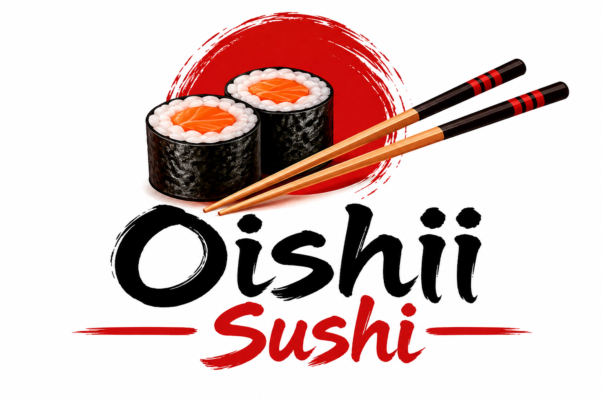
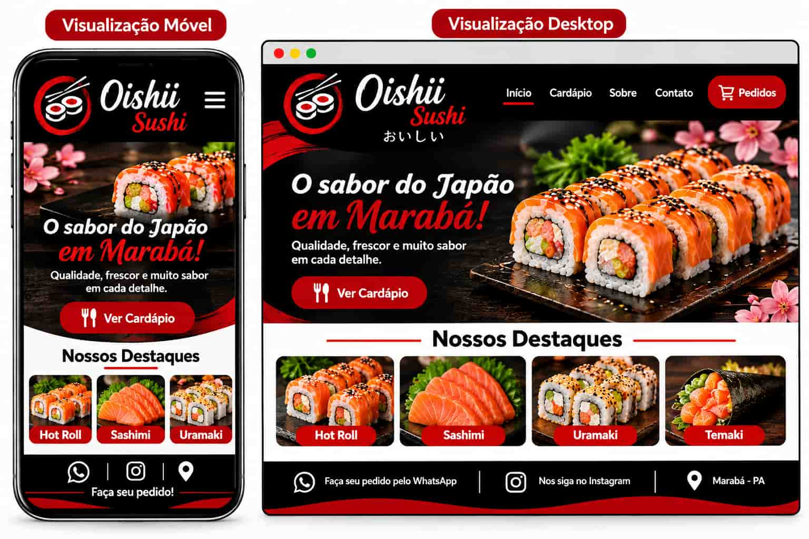

Nome do Site
Oishii Sushi
O nome "Oishii Sushi" foi escolhido por unir a identidade regional à cultura japonesa. A sonoridade de “Oishii” lembra a expressão “oshi”, bastante conhecida e utilizada na região de Marabá, o que torna o nome familiar e fácil de associar ao público local. Além disso, gostei do significado da palavra em japonês, que é “delicioso” ou “saboroso”, transmitindo a proposta do restaurante de oferecer uma experiência agradável por meio da culinária japonesa.

Finalidade do Site
O site tem como objetivo apresentar o restaurante, disponibilizar o cardápio digital e facilitar a realização de pedidos online, permitindo que os clientes escolham os produtos, adicionem ao carrinho e encaminhem seus pedidos pelo WhatsApp.
Cenário
- Como posso consultar os produtos e seus preços?
- Como faço para adicionar produtos ao carrinho e enviar meu pedido pelo WhatsApp?
- Onde encontro a localização e as redes sociais do restaurante?
Esquema de Cores
- Preto — #1C1C1C — fundo e cabeçalho.
- Vermelho — #B22222 — botões e destaques.
- - Branco — #FFFFFF — textos e fundos de contraste.
tipografia
- Roboto — utilizada nos títulos.
- Open Sans — utilizada nos parágrafos e textos gerais.
Wireframe
visualização Móvel
Desktop
